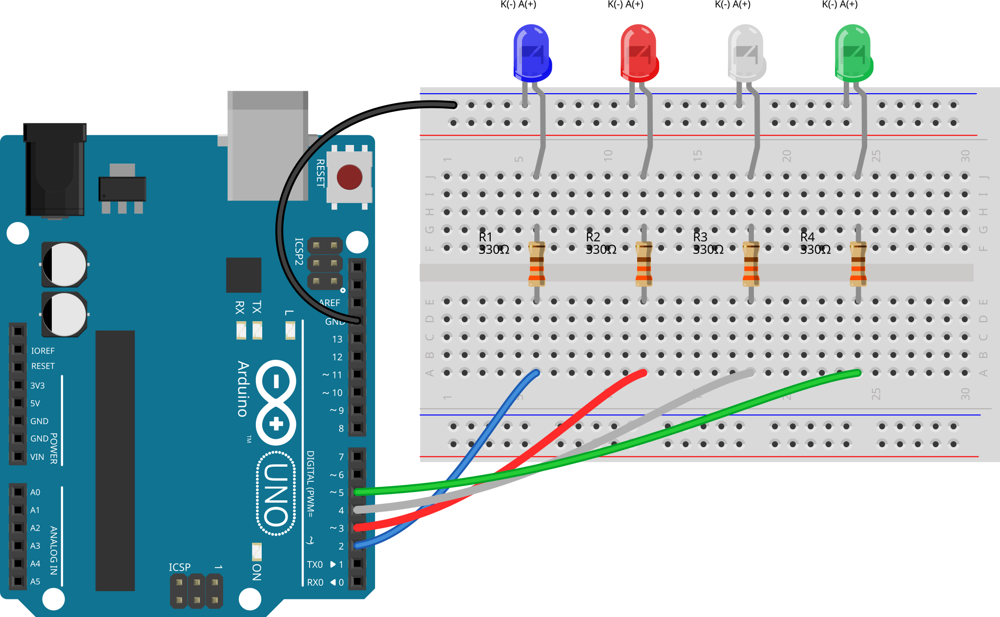

01실습 목표
하나의 규칙으로 12개 상태 만들기
켜질 구간의 길이를 1개 → 2개 → 3개로 늘리고, 각 구간의 시작 위치를 왼쪽에서 오른쪽으로 네 번 이동한다. 3 × 4이므로 한 주기는 12단계다.
배열과 반복문의 역할 확인하기
D2–D5 핀을 배열로 묶고, 현재 LED가 켜질 구간 안에 있는지 조건식으로 판단한다. 오른쪽 끝을 넘어간 LED는 자연스럽게 표시되지 않는다.
02브라우저 시뮬레이션과 패턴
브라우저 시뮬레이션
실제 하드웨어 촬영 영상이 아닙니다.
12단계 전체 상태
03Fritzing 연결도와 배선
왼쪽부터 파랑·빨강·흰색·초록 LED를 D2·D3·D4·D5에 연결했다. LED마다 330Ω 저항을 하나씩 직렬로 연결하고, 캐소드는 Arduino의 GND로 모았다.



회로 기호로 연결 원리 보기
핀 연결
| 출력 핀 | 연결 |
|---|---|
| D2 | 330 Ω → 파랑 LED 애노드(+) |
| D3 | 330 Ω → 빨강 LED 애노드(+) |
| D4 | 330 Ω → 흰색 LED 애노드(+) |
| D5 | 330 Ω → 초록 LED 애노드(+) |
각 LED의 캐소드(−)는 공통 GND에 연결한다.
준비물
- Arduino Uno 1개
- 파랑·빨강·흰색·초록 LED 각 1개
- 330 Ω 저항 4개
- 브레드보드 1개
- 점퍼선
사용한 저항의 색띠는 주황–주황–검정–검정–갈색이다. 5색띠 규칙으로 읽으면 330 × 1 = 330Ω, 허용 오차는 ±1%다. 이는 색띠의 표기값이며 멀티미터 측정값은 아니다. 저항 제조사 색띠표
04스케치
12개 상태를 일일이 나열하는 대신, 핀 배열과 세 반복문으로 같은 규칙을 표현했다. 켜야 할 LED와 꺼야 할 LED를 매 단계 함께 갱신하므로 이전 상태가 남지 않는다.
const int ledPins[] = {2, 3, 4, 5};
const int ledCount = 4;
void setup() {
for (int led = 0; led < ledCount; led++) {
pinMode(ledPins[led], OUTPUT);
}
}
void loop() {
for (int count = 1; count <= 3; count++) {
for (int start = 0; start < ledCount; start++) {
for (int led = 0; led < ledCount; led++) {
digitalWrite(ledPins[led], led >= start && led < start + count ? HIGH : LOW);
}
delay(500);
}
}
}
소스에는 digitalWrite()를 한 번만 작성했다. 실행 중에는 12단계 × 4개 LED로 한 주기에 48번 호출된다. 중복 코드를 줄이면서 각 단계의 출력을 명확하게 지정하는 방식이다.
한 주기의 대기 시간 합은 12 × 500ms = 6초다. 실제 주기에는 핀 출력과 반복문 실행 시간이 조금 더해진다.
05동작 원리
1. count가 켜질 구간의 길이를 정한다
count는 1부터 3까지 변한다. 따라서 한 번에 켜지는 구간의 길이는 1개, 2개, 3개 순서로 늘어난다.
2. start가 시작점을 옮긴다
start는 0부터 3까지 이동한다. 배열의 0번은 D2, 1번은 D3, 2번은 D4, 3번은 D5다.
3. 현재 LED가 구간 안인지 검사한다
led >= start && led < start + count두 조건이 모두 참인 LED만 HIGH가 된다. 나머지는 같은 반복에서 LOW로 갱신된다.
4. 오른쪽을 벗어난 부분은 잘린다
예를 들어 count = 3, start = 3이면 유효한 배열 위치는 3 하나뿐이다. 그래서 마지막 상태는 0001이 된다.
06검증과 실제 영상
컴파일과 상태 순서
Arduino Uno 대상으로 컴파일한 결과 프로그램 저장 공간은 1,080바이트, 전역 변수는 17바이트였다. 별도 C++ 실행 검사에서도 12개 상태의 순서와 각 delay(500) 인자를 확인했다.
실물 보드 동작
아래 영상에서 12단계 순서가 두 번 완전히 반복되고 세 번째 주기가 시작되는 것을 확인했다. 각 상태는 약 0.5초 유지되며, 오른쪽 끝에서는 켜지는 LED 수가 줄어드는 동작도 과제 패턴과 일치한다.
영상의 0.5초부터 6.0초까지 0.5초 간격으로 보면 위의 12개 상태가 차례대로 나타난다. 6.5초부터 같은 순서를 다시 확인할 수 있다.